An Old Woman of Arles- oil on canvas, February 1888. At the van Gogh Museum, Amsterdam.
His work
at Arles
.
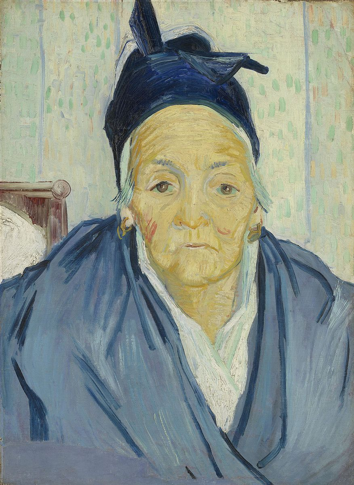
.
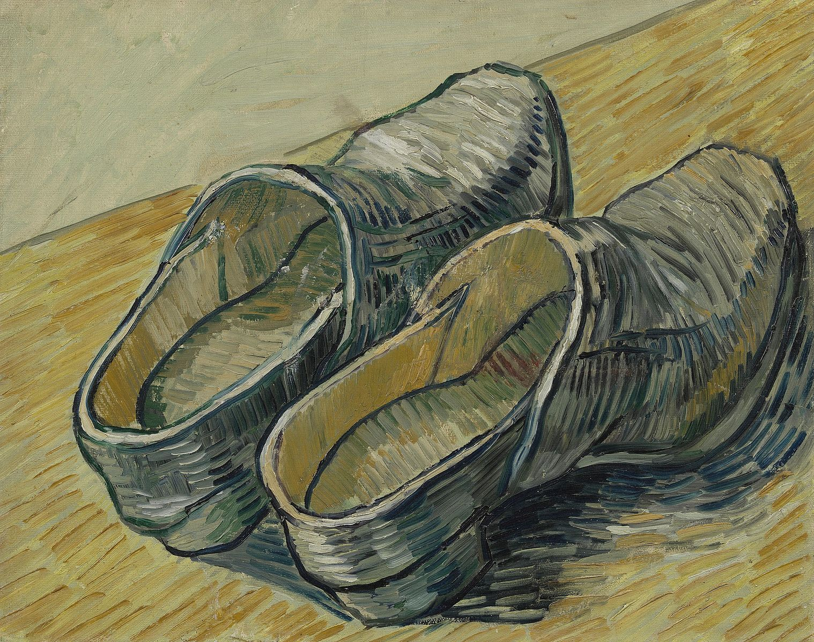
A Pair of Leather Clogs- oil on canvas, 1889- At the van Gogh Museum, Amsterdam.
.
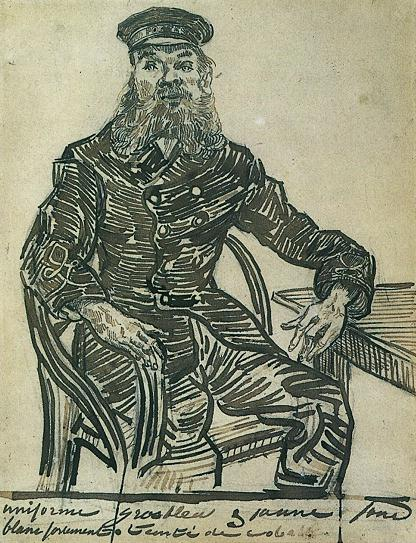
Joseph Roulin, Sitting in a Cane Chair, Three-Quarter-Length- drawing, 1888- At a private collection.
.

Sunflowers- oil on canvas, 1889. At the van Gogh museum, there is a version of this painting in the Sompo Japan Museum of Art. The Sunflowers paintingsd had a special significance for van Gogh, he wrote "they communicate gratitude, there is a few versions of it, and hung them in the room that the Paul Gauguin used when lived together in the Yellow House.
.
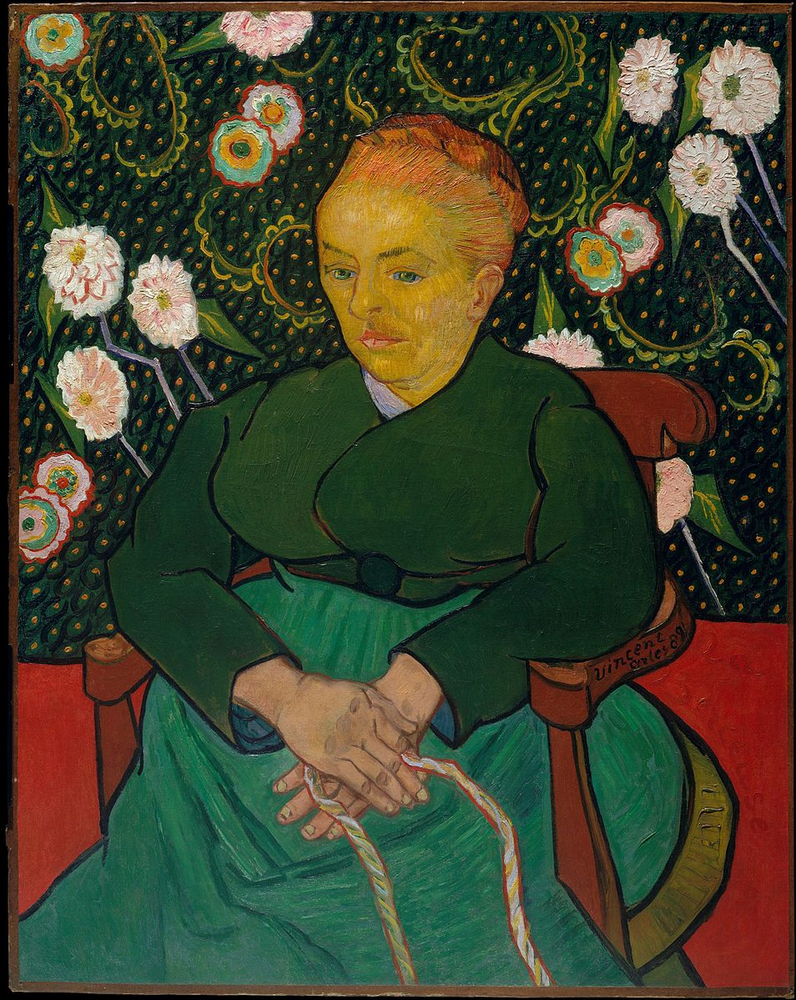
La Berceuse- oil on canvas, 1889. At the Metropolitan Museum of Art, New York. This paintings depicts Augustine Roulin. There is 4 of this paintings with variations.
.
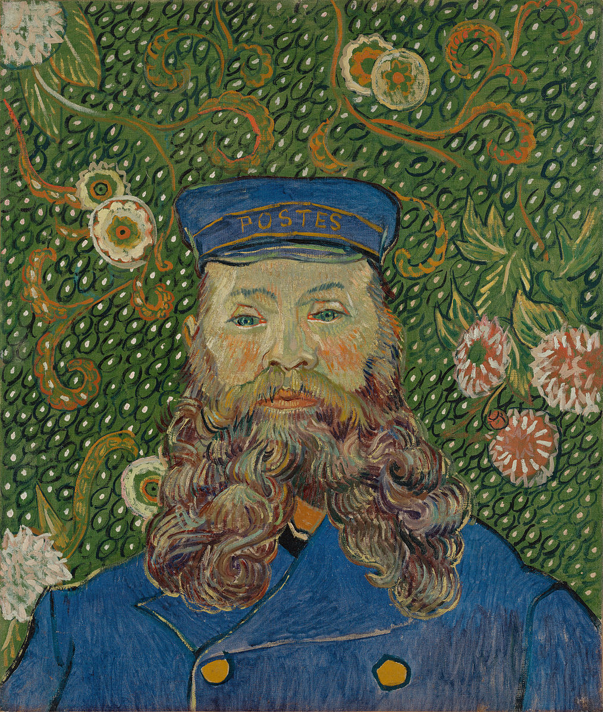
Portrait de Joseph Roulin- oil on canvas, 1889. At the MoMA, New York.
.
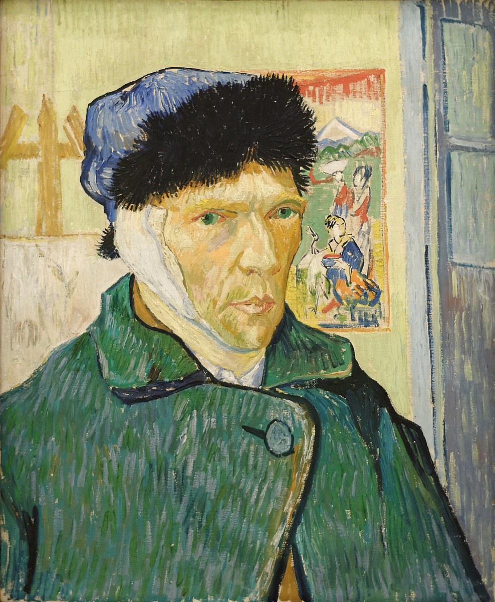
Self-Portrait with a Bandaged Ear- oil on canvas. 1889. At Courtauld Gallery, London. The painting was finished two weeks after December 30, 1888, when van Gogh had cut off his ear. It was his left ear and he made this painting by reflecting himself in a mirror.
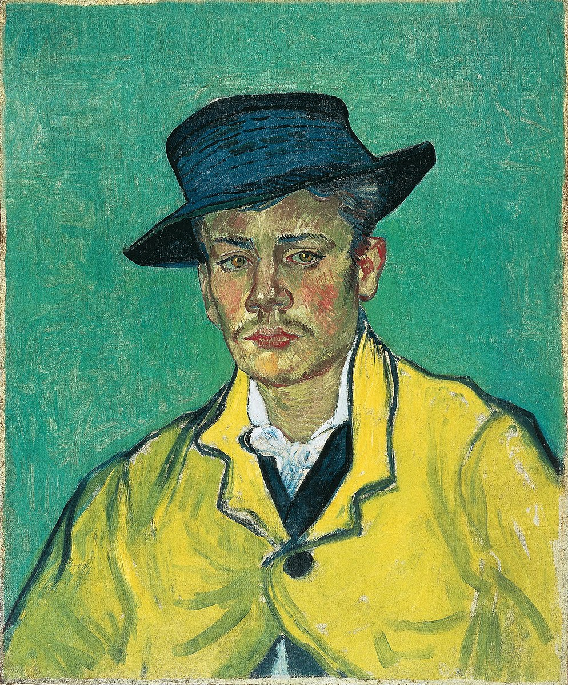
Portrait d'Armand Roulin - oil on canvas, 1888. São Paulo Museum of Art

Yellow House-
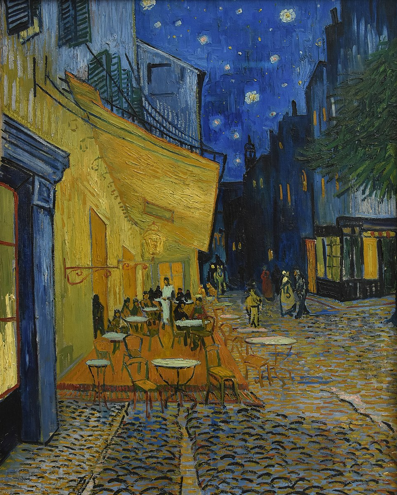
Café Terrace at Night - oil on canvas, sept 1888. Kröller-Müller Museum, Otterlo.
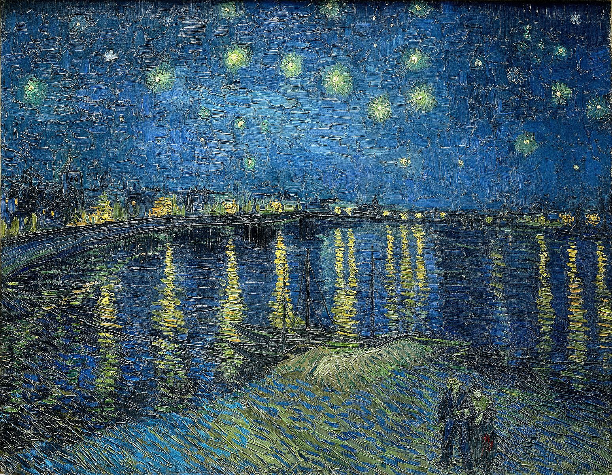
Starry Night Over the Rhone- oil on canvas, sept 1888. At Musée d'Orsay, Paris.
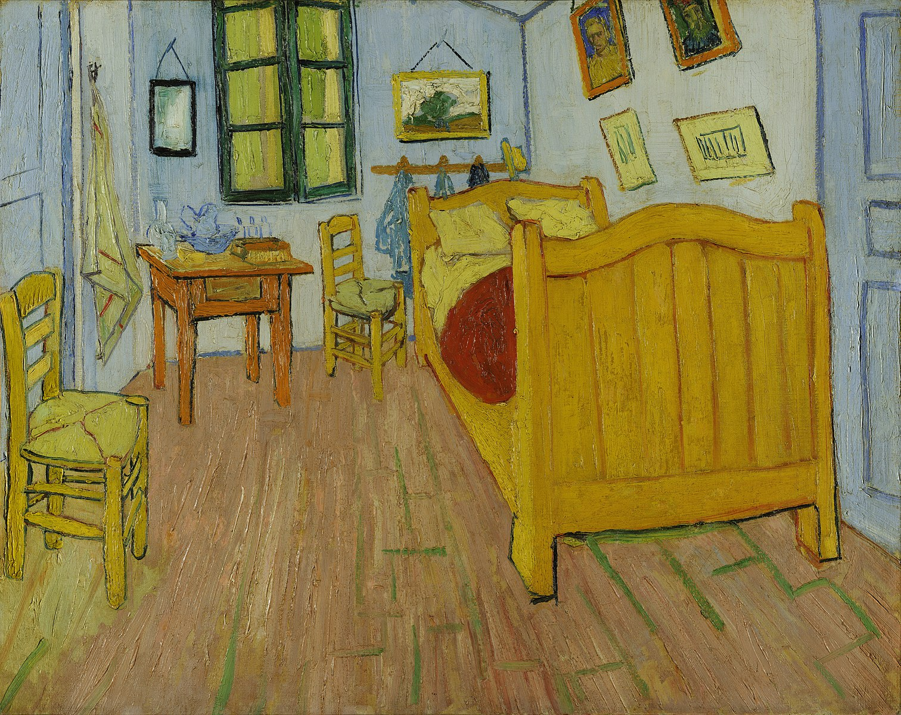
Bedroom in Arles- oil on canvas, 1888. At the van Gogh Museum, Amsterdam.
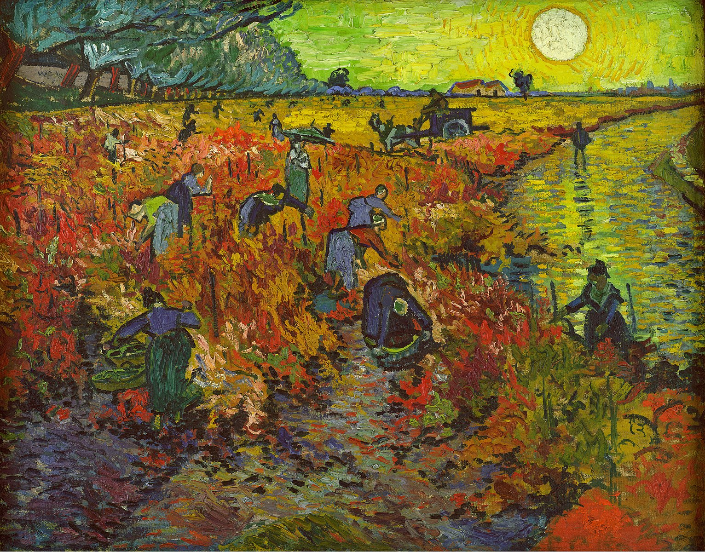
The Red Vineyard- oil on canvas, November 1888. At Pushkin Museum off Fine Arts, Moscow. This is the only painting that Vincent sold in his life. Bought by Anna Boch in an expo in Brussels.
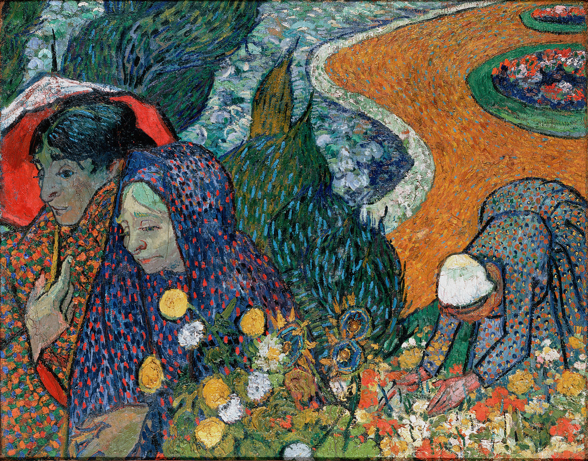
Memory of the Garden at Etten- oil on canvas, 1888. At Hermitage Museum, Saint Petersburg.